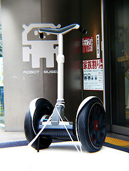
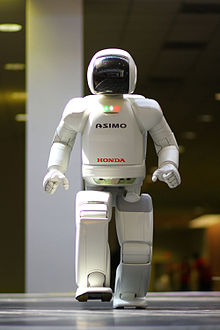
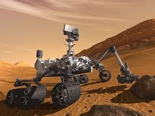
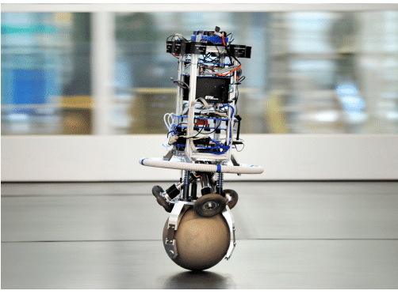

Приклади

Двоколісні балансувальні роботи
У балансувальних роботах, зазвичай, використовують гіроскоп для визначення того, наскільки робот нахиляється, а відтак, диск колеса пропорційно провертається у тому ж напрямку, щоби врівноважити нахил, згідно динаміки перевернутого маятника. У той час як Segway не є роботом, його можна розглядати як складову робота, у разі використання його в ролі RMP (Mobility Platform Robotic — пересувної платформи). Прикладом такого використання є Robonaut НАСА, який було встановлено на Segway.

Застосування ходьби до роботів
Ходьба є важким і динамічним, для вирішення, завданням. Було виготовлено кілька роботів, які можуть надійно ходити на двох ногах, проте, ніхто досі не зробив робота, який ходив-би настільки-ж надійно, як людина. Було побудовано також багато роботів, що ходять на більше ніж двох ногах, через те, що їх значно легше побудувати. У фільмі I, Robot було запропоновано гібриди роботів, котрі ходять на двох ногах і перемикаються на чотири (руки + ноги) у разі переходу до бігу. Як правило, роботи на двох ногах можуть добре ходити пласкими поверхнями і, інколи, можуть підніматися сходами, але досі ніхто з них, не може пройти кам'янистою, нерівною поверхнею

Шестиколісні роботи
Використання шести коліс замість чотирьох, дозволяє отримати краще зчеплення з ґрунтом — наприклад, на скелястій поверхні або траві. Існують спеціальні кінематичні схеми, що дозволяють утримувати однакове навантаження на всі колеса для забезпечення високої прохідності. Найбільш відома з таких схем, Rocker-bogie, застосовується на Марсоході «К'юріосіті».

Одноколісні балансувальні роботи
Одноколісний робот — балансувальник, є продовженням двоколісного балансувального робота. Він може переміщатися у будь-якому напрямку, використовуючи 2D круглу кулю як єдине колесо. Останнім часом було розроблено кілька одноколісних балансувальних роботів, таких як «Ballbot» університету Карнеґі-Меллона. Завдяки довгій та тонкій формі і можливості маневрувати в обмеженому просторі, у них є переваги, щоби працювати краще за інші роботи, у середовищі з людьми.